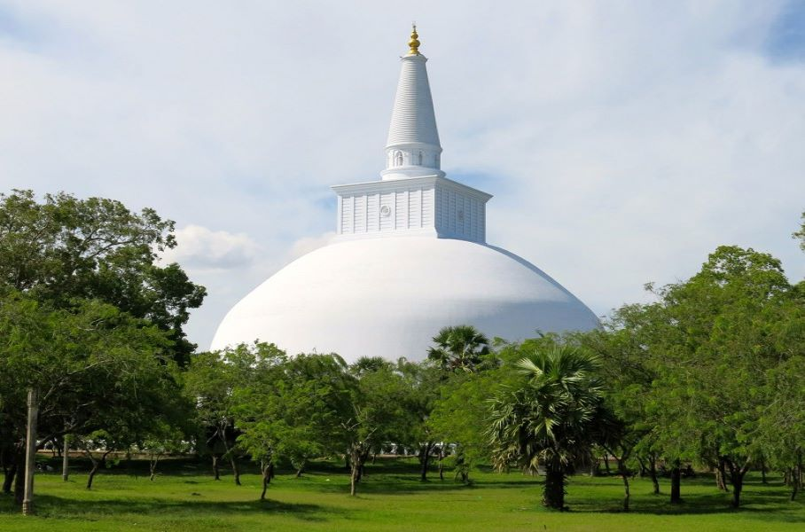
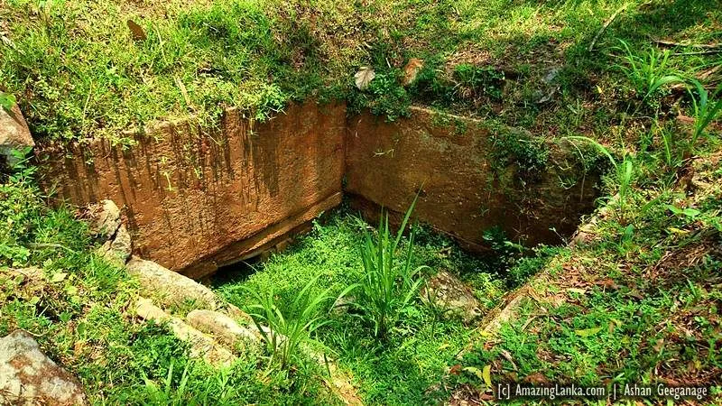
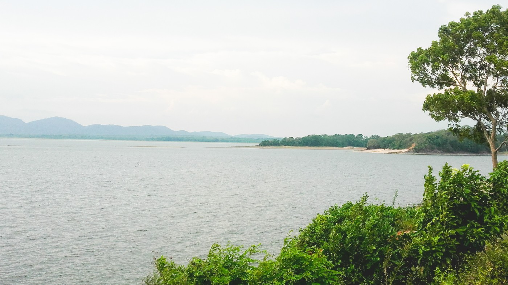
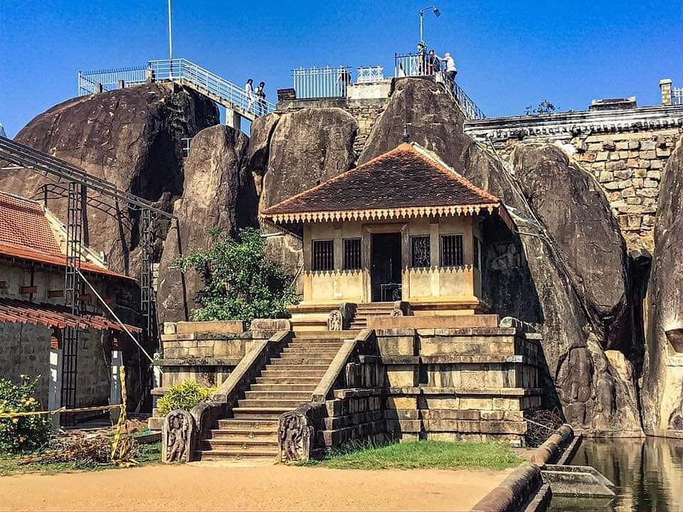

The city of anuradhapura was used the capital of sri lanka in the beginning centuries.
Anuradhapura is located in the central region of sri lanka therefore kings laid foundation to their kingdoms here due to ease of ruling.
After Mahinda thero arrived in Sri lanka the locals who were savages at that time following tribal religions followed buddhism and it started expanding rapidly.
Many Buddhist Structures like Temples,Relics,Monastries etc like Jetawanaramaya,Ruwanweliseya and Lovamahapaya were built and still the ruins of these constructions still reside and still worshipped by modern buddhists.
These structures reflect the impact on buddhism and the amazing architectural design of engineers and architects back in the day.
Religous temples and structures
After the Arrival of mahinda thero buddhism spread rapidly and very popular among the locals.
Even the king embraced buddhism and made it the nation's official religous practice.
As a result the kings the brought down more monks from India and burma to spread the religion and to facilitate the monks and as a place of for people to worship temples adn stupas were built.
To built these structures only the king but even wealthy provincial rulers contributed financially and socially.
Building these structures were done taking physical characteristics and sturdity of the structure into account.
It is said the "Ruwanwelimahaseya" was laid a foundation with a mixture of components and trampled by elephants to make it sink to the floor and harden itself.
The outer surface of "Jetawanaramaya" was plastered with seashells, sugar syrup, egg whites, coconut water, glues, oils, plant resin, sand, clay and pebbles.This can considered evidence for waterproofing in the ancient era.
Jetawanaramaya

Ruwanwelimahaseya
Damns and Reservoirs

The bisokutuwa

The Minneriya tank built by king Mahasen
The availablitity of water was critical for the city since water was needed for agriculture which was the main form of subsistence at that time.
But The kingdom of anuradhapura belonged to the dry zone and the kings built huge damns and reservoirs to store the water from rainfall.
It is said that King mahasen has built more than 16 tanks in the city of anuradhapura. Furthermore advanced of knowledge of water hydraulic engineering has been used to construct these tanks.
The Bisokoutuwa is built underneath the damn to reduce the pressure of the water.There also have been small anicuts to distribute this water for paddy fields.
Isuruminiya temple
History
The Site Plan
The isuruminya temple is not a traditional worshipping place for buddhist pilgrims but it is a very strange place.
There are lot's of mythical stories behind this temple and some people even mentioned that this is the king's rest house.
This was built by king devanampiyathissa as a resting place for 500 high cast members.
The design of this temple is marvelous and it's landscaping is a must for anyone to see with beautiful elephant sculptues,pools etc.
Archaelogical ruins
This has a style of a 6 th centry gupta carving.The woman is seated on the man's lap and it can be seen that the woman lift's her finger has a warning measure.
Some sources claim that the male and female in the above figure are Prince saliya and Ashokamala.